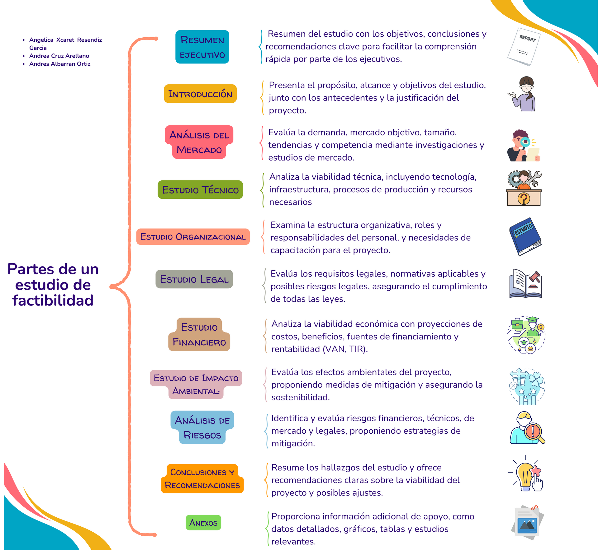

Teoría Estudio de Factibilidad
1. Conceptos
2. Cuadro comparativo
3.Partes de un estudio de Factibilidad
4. Ejemplo

Un estudio de factibilidad es un análisis exhaustivo que se realiza para determinar la viabilidad de un proyecto o negocio. Este documento es crucial para la toma de decisiones informadas y suele incluir varias secciones clave. Aquí se detallan las partes típicas de un estudio de factibilidad, junto con una descripción de cada una:
created with
Website Builder .